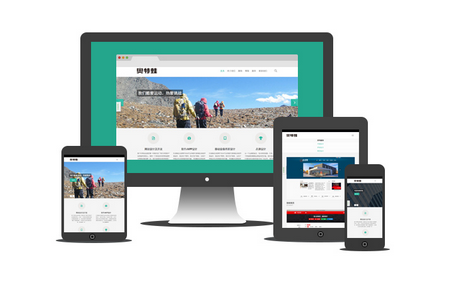

麻雀虽小，五脏俱全
YY UI 满足前端开发的基本需求，大到响应式，小到一个文本的大小设置，应有尽有。

预处理器
YY UI 的源码是基于 CSS 预处理脚本之一的 Sass 开发的。你可以采用预编译的 CSS 文件快速开发，也可以从源码定制自己需要的样式。 当然你也可以直接使用 YY UI 提供的 CSS 样式表。

响应式布局
响应式布局可以为不同终端的用户提供更加舒适的界面和更好的用户体验，而且随着目前大屏幕移动设备的普及，用“大势所趋”来形容也不为过。 随着越来越多的设计师采用这个技术，我们不仅看到很多的创新，还看到了一些成形的模式。YY UI 在PC端表现良好，手机端可用。

五脏俱全
YY UI 能满足前端大部分的需求，而且附带了详细的开发文档，以及 yayo 在写作过程中的心得体会。